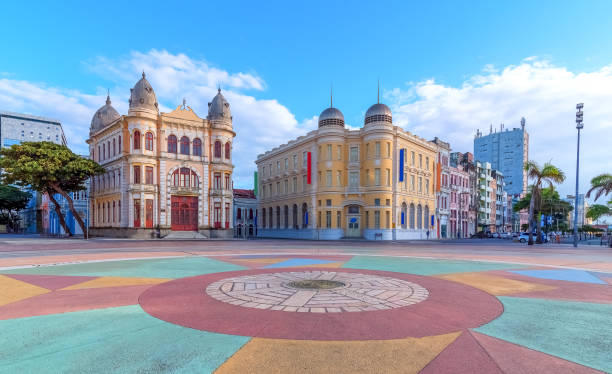
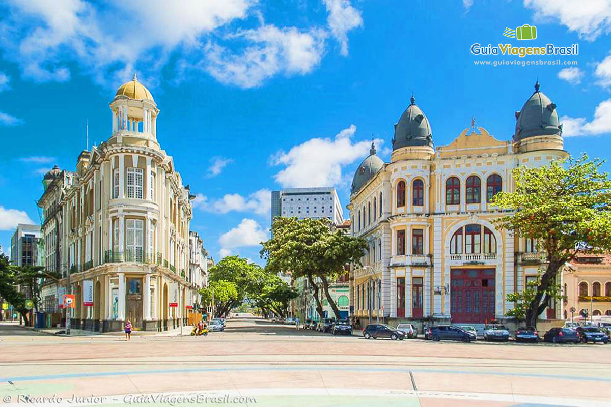

Bem-vindo a Recife
História
A origem do Recife remonta à terceira década do Século XVI, quando era uma estreita faixa de areia protegida por uma linha de arrecifes que formava um ancoradouro. Devido as suas características físicas favoráveis, o local passou a abrigar um porto. E no entorno dele, que servia a Vila de Olinda, formou-se um povoado com cerca de 200 habitantes, em sua maioria, marinheiros, carregadores e pescadores. O assentamento ocupava a península correspondente ao que é hoje o Bairro do Recife. Por se tratar de região portuária, a atividade comercial desenvolveu-se rapidamente impulsionando o crescimento do povoado. E em 1537, a constituição da Vila do Recife é registrada. No século XVII, com o desenvolvimento econômico da colônia, o porto prosperou favorecendo a expansão da vila que toma forma de cidade. A atividade açucareira também cresceu e as margens dos cursos d’água passaram a serem ocupadas por engenhos e casebres, enquanto os rios tornaram-se caminhos navegáveis para transporte dos produtos. Em 1630, Olinda, então centro da capitania, é invadida e incendiada por holandeses. Contudo, os invasores se estabeleceram nas terras baixas do Recife, seja porque o sítio de Olinda não favorecia aos seus interesses militares e comerciais, seja pela semelhança do Recife com a Holanda. Desse modo, colonos, soldados, habitantes de Olinda e imigrantes judeus iniciaram a ocupação da Vila do Recife. A partir do Século XVIII, o desenvolvimento da cidade se apóia no comércio externo e a urbanização portuguesa incide predominantemente sobre o antigo território holandês, de forma espontânea, caracterizada por ruas estreitas, que se abrem em pátios onde se destaca a construção religiosa. No Século XIX, a cidade já apresenta um tecido densamente urbanizado que corresponde ao atual centro histórico surgido dos aterros das áreas alagadas e mangues, a partir da ocupação holandesa. sé. Em divisão territorial datada de 1-VI-1995, o município é constituído do distrito sede. Em divisão territorial datada de 15-VII-1999, o município é constituído do distrito sede. Assim permanecendo em divisão territorial datada de 2005.
Imagens
 